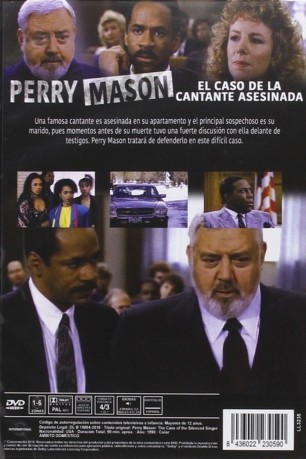

IMDB-Wertung: 7.1 / 10
IMDB-Wertung: 7.1 / 10  Metascore:
Metascore: 
Eine Pop-Sängerin wird ermordet. Bei der Verteidigung des tatverdächtigen Ehemannes findet der Jurist mit den detektivischen Ambitionen heraus, dass der Star sich mit seinen Allüren viele Feinde gemacht hat.
Alternativ: Perry Mason: The Case of the Silenced Singer
 IMDB-Wertung: 7.1 / 10 Metascore:
Eine Pop-Sängerin wird ermordet. Bei der Verteidigung des tatverdächtigen Ehemannes findet der Jurist mit den detektivischen Ambitionen heraus, dass der Star sich mit seinen Allüren viele Feinde gemacht hat.
Jahr: 1990
Dauer: 89 Minuten
FSK:
Land: USA Studio: NBCTonspuren:
Untertitel:
Auflösung: SD (640x478) Größe: 887 MB
Regisseur: Ron Satlof
Drehbuch: Erle Stanley Gardner
Soundtrack:
Darsteller:
 Raymond Burr als Perry Mason
Raymond Burr als Perry Mason Barbara Hale als Della Street
Barbara Hale als Della Street William R. Moses als Ken Malansky
William R. Moses als Ken Malansky Vanessa Williams als Terri Knight
Vanessa Williams als Terri Knight Angela Bassett als Carla Peters
Angela Bassett als Carla Peters Alice Ghostley als Sarah McDevitt
Alice Ghostley als Sarah McDevitt James McEachin als Lt. Ed Brock
James McEachin als Lt. Ed BrockDatei: X:\Person\Perry Mason\Perry Mason und der Tod eines Idols (1990, FSK, 640x478).mkv seit 28.07.2017
Festplatte: HD Collection-7+mehr(A-Z)+Person
 Es gibt insgesamt 20 Filme in der Gruppe 'Person\Perry Mason'
Es gibt insgesamt 20 Filme in der Gruppe 'Person\Perry Mason'